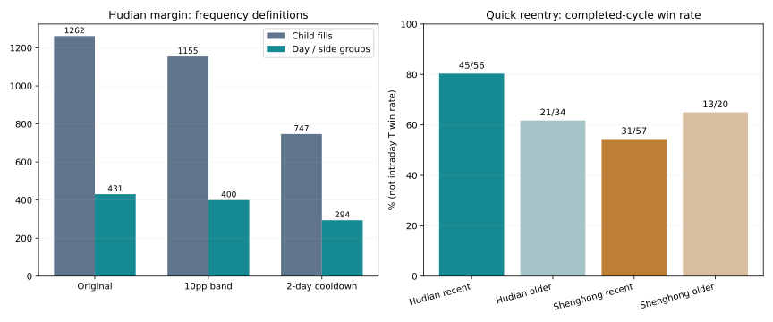

买卖频次：少交易是否更容易盈利、回撤更小？
两个事前固定规则分别测试 · 256组完整账户 · 按实际费率 · 不改默认
结论：不能统一压低频次，快速买回有时正是收益来源
本轮只改变执行频次，保留原方向与仓位信号，不与上轮尾盘买入或分环境路由叠加。当前目标仍是未来交易的胜率与回撤；历史收益只是检验材料，不能通过不断挑历史赢家来保证未来。
沪电融资卖出后等待两天：有成交日期从431天降至294天，最大回撤25.20%→23.01%，但完整周期胜率74/102＝72.55%→54/82＝65.85%，净收益1226.51%→347.68%。虽降低风险，仍不是提高胜率的办法。平均仓位59.37%→42.89%，回撤下降也含少参与的效果。
更关键的诊断：沪电近三年原融资策略在卖出后两个交易日内重新建仓，已结束周期45/56盈利＝80.36%，持仓中位数4天；更早同类仅21/34＝61.76%，平均周期收益还为负。胜宏近三年同类31/57＝54.39%。这说明快买回有时是有价值的反转参与，不能一刀切；80.36%既不是日内做T胜率，也不是未来概率。

预先固定的两条规则
B：允许目标仓位10个百分点误差。正常目标大于0时，实际仓位与目标相差不超过10个百分点就不调仓；原先容忍度为目标≥100%时0.4个百分点，其余3.5个百分点。该检查也用于分批执行，所以剩余差额降到10个百分点内便停止，不只是删除独立小单。目标为0的清仓及强制风险退出仍用原容忍度。持有期被动超仓规则不变。
C：卖出后两天禁止重新买入。按实际卖出日开始计算，包括卖出当日、接下来两个交易日；第三个交易日只有原信号仍要求买入时才允许，不自动补回。部分卖出和风险卖出均触发，任何卖出都不受冷却限制。一次买入计划的同向分批不会触发冷却。没有强制最低持仓天数，避免锁住风险退出。
两条规则独立运行；10个百分点、2日均在计算前固定，没有再搜索历史最佳阈值。本轮没有检验所有频次或证明最佳频次。默认信号本来每天只安排一次正常调仓、最多5根5分钟K线分批，另有风险处置；观察图上的S/R提示不是实际模型交易，不能拿提示数充当成交次数。
怎样正确统计“频次”
子成交笔数：每根5分钟窗口实际成交一笔。日／方向组：同一天、同一个买卖方向的子成交合并一次；原模型中通常近似一次执行计划，但不是所有可能算法的严格决策数。有成交日：当天至少一笔成交。完整持仓周期：空仓建仓到再次空仓，可能跨日、含多次加减仓。快速反向组：相邻日／方向组方向相反且相隔不超过两个交易日，不等于完整做T。以下为三年727交易日、单边5基点滑点。
| 股票／方案 | 子成交笔数 | 日／方向组 | 有成交日 | 买入日／卖出日 | 买入日间隔中位数 | 两日内反向组 | 税费合计（元） | 换手累计 |
|---|---|---|---|---|---|---|---|---|
| 沪电／原现金 | 763 | 378 | 378 | 195 / 183 | 3 | 220 | 185,888 | 231.5倍 |
| 沪电／原融资 | 1262 | 431 | 431 | 241 / 190 | 2 | 232 | 393,745 | 326.4倍 |
| 沪电／现金·10个百分点误差 | 707 | 378 | 378 | 194 / 184 | 3 | 219 | 180,914 | 226.4倍 |
| 沪电／融资·10个百分点误差 | 1155 | 400 | 400 | 212 / 188 | 3 | 223 | 384,368 | 321.2倍 |
| 沪电／现金·卖后等待2日 | 491 | 266 | 266 | 133 / 133 | 5 | 80 | 92,499 | 162.3倍 |
| 沪电／融资·卖后等待2日 | 747 | 294 | 294 | 157 / 137 | 4 | 85 | 173,316 | 228.5倍 |
| 胜宏／原现金 | 437 | 298 | 298 | 161 / 137 | 3 | 159 | 127,667 | 188.6倍 |
| 胜宏／原融资 | 649 | 328 | 328 | 191 / 137 | 2 | 170 | 235,513 | 275.4倍 |
| 胜宏／现金·10个百分点误差 | 406 | 296 | 296 | 159 / 137 | 3 | 159 | 126,116 | 186.5倍 |
| 胜宏／融资·10个百分点误差 | 558 | 304 | 304 | 167 / 137 | 3 | 162 | 232,114 | 271.3倍 |
| 胜宏／现金·卖后等待2日 | 337 | 222 | 222 | 114 / 108 | 5 | 62 | 87,412 | 143.7倍 |
| 胜宏／融资·卖后等待2日 | 475 | 242 | 242 | 133 / 109 | 4 | 69 | 146,894 | 208.7倍 |
沪电现金B规则从763笔降到707笔，但有成交日仍为378天；减少的主要是分批执行尾部，不能说独立交易机会减少了同样比例。沪电融资B从431个日／方向组降至400，子成交1262→1155，周期胜率72.55%→72.00%，回撤25.20%→25.36%，未同时改善。
费用绝对值受资产规模和收益路径影响：冷却后的账户更小，费用少不全是频次优势。证据包另列换手、费用／初始本金、融资利息；不能用费用差直接加回原收益当作反事实收益。
完整账户结果
| 股票／方案 | 净收益 | 最大回撤 | 平均仓位 | 完整周期盈利／完成周期 | 盈利日／全部日 | 最差5%日均收益 |
|---|---|---|---|---|---|---|
| 沪电／全仓持有 | 423.59% | 48.19% | 98.80% | 无完成周期 | 374/727 = 51.44% | -7.28% |
| 沪电／原现金 | 537.26% | 19.18% | 44.16% | 76/109 = 69.72% | 278/727 = 38.24% | -4.32% |
| 沪电／原融资 | 1226.51% | 25.20% | 59.37% | 74/102 = 72.55% | 281/727 = 38.65% | -6.05% |
| 沪电／固定50% | 156.82% | 27.08% | 49.87% | 无完成周期 | 375/727 = 51.58% | -3.72% |
| 沪电／现金·10个百分点误差 | 525.64% | 18.78% | 43.48% | 76/109 = 69.72% | 280/727 = 38.51% | -4.25% |
| 沪电／融资·10个百分点误差 | 1227.14% | 25.36% | 58.61% | 72/100 = 72.00% | 283/727 = 38.93% | -5.98% |
| 沪电／现金·卖后等待2日 | 180.01% | 17.74% | 32.69% | 52/78 = 66.67% | 240/727 = 33.01% | -3.92% |
| 沪电／融资·卖后等待2日 | 347.68% | 23.01% | 42.89% | 54/82 = 65.85% | 225/727 = 30.95% | -5.35% |
| 胜宏／全仓持有 | 818.57% | 55.12% | 99.55% | 无完成周期 | 340/727 = 46.77% | -8.62% |
| 胜宏／原现金 | 191.85% | 34.50% | 38.15% | 61/98 = 62.24% | 226/727 = 31.09% | -5.63% |
| 胜宏／原融资 | 300.94% | 48.39% | 53.04% | 58/96 = 60.42% | 225/727 = 30.95% | -8.37% |
| 胜宏／固定50% | 264.75% | 32.39% | 50.02% | 无完成周期 | 340/727 = 46.77% | -4.30% |
| 胜宏／现金·10个百分点误差 | 190.76% | 34.05% | 37.81% | 61/98 = 62.24% | 227/727 = 31.22% | -5.61% |
| 胜宏／融资·10个百分点误差 | 300.84% | 47.05% | 52.41% | 57/95 = 60.00% | 224/727 = 30.81% | -8.23% |
| 胜宏／现金·卖后等待2日 | 107.87% | 27.78% | 29.47% | 49/75 = 65.33% | 184/727 = 25.31% | -5.00% |
| 胜宏／融资·卖后等待2日 | 130.85% | 40.37% | 40.64% | 45/74 = 60.81% | 183/727 = 25.17% | -7.46% |
最大回撤按5分钟及官方收盘采样，不是逐笔极值。沪电现金冷却的胜率69.72%→66.67%；胜宏现金反而62.24%→65.33%，回撤34.50%→27.78%；胜宏融资胜率60.42%→60.81%，回撤48.39%→40.37%。同一规则的收益与胜率变化并不一致。
本轮没有独立配对的日内做T往返，故做T胜率不适用；完整持仓周期胜率不能代替它。未平仓按市值计入账户损益与回撤，未加入已完成胜率分母；平盘、空仓不算盈利日。
快速买回：高胜率在哪，为什么不能直接推广？
对原策略已完成周期作诊断：建仓前最近一次实际卖出是否在两个交易日以内。分类在建仓时可知，最终盈亏只能在结束后知道。本表为事后描述，没有用它反过来修改本轮交易规则。未结束周期单列在账户明细。
| 股票／账户 | 时期 | 卖后两日内建仓 | 盈利／已完成周期 | 平均周期收益 | 持仓天数中位数 |
|---|---|---|---|---|---|
| 沪电／原现金 | 近三年 | 否 | 27/44 = 61.36% | 0.93% | 4.0 |
| 沪电／原现金 | 近三年 | 是 | 49/65 = 75.38% | 2.42% | 3.0 |
| 沪电／原现金 | 更早历史 | 否 | 18/29 = 62.07% | 0.34% | 5.0 |
| 沪电／原现金 | 更早历史 | 是 | 20/34 = 58.82% | -0.70% | 4.0 |
| 沪电／原融资 | 近三年 | 否 | 29/46 = 63.04% | 1.87% | 5.0 |
| 沪电／原融资 | 近三年 | 是 | 45/56 = 80.36% | 3.45% | 4.0 |
| 沪电／原融资 | 更早历史 | 否 | 16/23 = 69.57% | 0.52% | 5.0 |
| 沪电／原融资 | 更早历史 | 是 | 21/34 = 61.76% | -0.66% | 6.0 |
| 胜宏／原现金 | 近三年 | 否 | 29/39 = 74.36% | 2.87% | 4.0 |
| 胜宏／原现金 | 近三年 | 是 | 32/59 = 54.24% | 0.34% | 4.0 |
| 胜宏／原现金 | 更早历史 | 否 | 15/20 = 75.00% | 0.92% | 5.0 |
| 胜宏／原现金 | 更早历史 | 是 | 17/28 = 60.71% | -0.42% | 7.5 |
| 胜宏／原融资 | 近三年 | 否 | 27/39 = 69.23% | 3.67% | 4.0 |
| 胜宏／原融资 | 近三年 | 是 | 31/57 = 54.39% | 0.76% | 3.0 |
| 胜宏／原融资 | 更早历史 | 否 | 11/18 = 61.11% | 1.50% | 5.0 |
| 胜宏／原融资 | 更早历史 | 是 | 13/20 = 65.00% | -0.63% | 10.5 |
沪电近期融资快买回组平均周期收益+3.45%，更早同组−0.66%；后者仍有61.76%盈利周期，说明胜率超过50%仍可能因少数大亏而损失。非快买回组样本与环境也不同，不能据此声称“快买回导致80%胜率”。该差异支持下一轮研究带环境条件的冷却，不支持无条件增加交易。
三个固定年度、滑点与更早历史
| 股票／方案 | 滑点 | 回撤优于原方案的年度数 | 周期胜率优于原方案的年度数 |
|---|---|---|---|
| 沪电／现金·10个百分点误差 | 5基点 | 3/3 | 0/3 |
| 沪电／现金·10个百分点误差 | 10基点 | 2/3 | 1/3 |
| 沪电／融资·10个百分点误差 | 5基点 | 3/3 | 0/3 |
| 沪电／融资·10个百分点误差 | 10基点 | 2/3 | 1/3 |
| 沪电／现金·卖后等待2日 | 5基点 | 2/3 | 1/3 |
| 沪电／现金·卖后等待2日 | 10基点 | 2/3 | 2/3 |
| 沪电／融资·卖后等待2日 | 5基点 | 2/3 | 1/3 |
| 沪电／融资·卖后等待2日 | 10基点 | 2/3 | 1/3 |
| 胜宏／现金·10个百分点误差 | 5基点 | 1/3 | 1/3 |
| 胜宏／现金·10个百分点误差 | 10基点 | 2/3 | 0/3 |
| 胜宏／融资·10个百分点误差 | 5基点 | 3/3 | 0/3 |
| 胜宏／融资·10个百分点误差 | 10基点 | 1/3 | 1/3 |
| 胜宏／现金·卖后等待2日 | 5基点 | 2/3 | 2/3 |
| 胜宏／现金·卖后等待2日 | 10基点 | 2/3 | 2/3 |
| 胜宏／融资·卖后等待2日 | 5基点 | 2/3 | 2/3 |
| 胜宏／融资·卖后等待2日 | 10基点 | 2/3 | 2/3 |
每年度从10月9日起独立100万元。沪电融资冷却第一年度回撤20.34%→21.78%变差；第二年度26.20%→13.87%改善明显；第三年度22.96%→22.91%仅微幅改善。胜率只第二年提高，不能宣称每年有效。
以下为近三年、单边10基点压力：
| 股票／方案 | 净收益 | 最大回撤 | 平均仓位 | 完整周期盈利／完成周期 | 盈利日／全部日 | 最差5%日均收益 |
|---|---|---|---|---|---|---|
| 沪电／原现金 | 460.52% | 19.75% | 44.19% | 73/108 = 67.59% | 288/727 = 39.61% | -4.34% |
| 沪电／原融资 | 1081.02% | 25.95% | 59.74% | 68/100 = 68.00% | 278/727 = 38.24% | -6.08% |
| 沪电／现金·10个百分点误差 | 460.79% | 19.27% | 43.75% | 74/109 = 67.89% | 289/727 = 39.75% | -4.27% |
| 沪电／融资·10个百分点误差 | 1083.60% | 25.93% | 58.90% | 70/102 = 68.63% | 279/727 = 38.38% | -6.00% |
| 沪电／现金·卖后等待2日 | 157.18% | 18.32% | 32.67% | 52/82 = 63.41% | 223/727 = 30.67% | -3.95% |
| 沪电／融资·卖后等待2日 | 299.91% | 23.49% | 42.96% | 54/82 = 65.85% | 225/727 = 30.95% | -5.39% |
| 胜宏／原现金 | 165.21% | 34.82% | 38.09% | 61/98 = 62.24% | 223/727 = 30.67% | -5.65% |
| 胜宏／原融资 | 246.28% | 48.77% | 53.06% | 57/97 = 58.76% | 225/727 = 30.95% | -8.40% |
| 胜宏／现金·10个百分点误差 | 165.06% | 34.44% | 37.87% | 60/97 = 61.86% | 224/727 = 30.81% | -5.61% |
| 胜宏／融资·10个百分点误差 | 237.22% | 47.76% | 52.41% | 57/98 = 58.16% | 222/727 = 30.54% | -8.30% |
| 胜宏／现金·卖后等待2日 | 92.95% | 28.09% | 29.49% | 49/76 = 64.47% | 179/727 = 24.62% | -5.02% |
| 胜宏／融资·卖后等待2日 | 106.17% | 40.73% | 40.73% | 45/74 = 60.81% | 181/727 = 24.90% | -7.48% |
以下为2020-01-02至2023-09-28更早区间：
| 股票／方案 | 净收益 | 最大回撤 | 平均仓位 | 完整周期盈利／完成周期 | 盈利日／全部日 | 最差5%日均收益 |
|---|---|---|---|---|---|---|
| 沪电／原现金 | -20.02% | 59.42% | 36.15% | 38/63 = 60.32% | 258/910 = 28.35% | -3.57% |
| 沪电／原融资 | -23.97% | 72.81% | 49.43% | 37/57 = 64.91% | 269/910 = 29.56% | -5.09% |
| 沪电／现金·10个百分点误差 | -18.89% | 58.65% | 35.11% | 41/67 = 61.19% | 257/910 = 28.24% | -3.50% |
| 沪电／融资·10个百分点误差 | -23.58% | 71.99% | 48.39% | 39/60 = 65.00% | 329/910 = 36.15% | -4.98% |
| 沪电／现金·卖后等待2日 | -12.76% | 50.99% | 28.72% | 36/52 = 69.23% | 232/910 = 25.49% | -3.12% |
| 沪电／融资·卖后等待2日 | -2.15% | 59.59% | 38.38% | 34/47 = 72.34% | 308/910 = 33.85% | -4.24% |
| 胜宏／原现金 | -4.50% | 47.10% | 42.11% | 32/48 = 66.67% | 341/910 = 37.47% | -4.05% |
| 胜宏／原融资 | -6.67% | 60.81% | 55.03% | 24/38 = 63.16% | 342/910 = 37.58% | -5.69% |
| 胜宏／现金·10个百分点误差 | -13.01% | 47.59% | 40.32% | 38/56 = 67.86% | 335/910 = 36.81% | -3.89% |
| 胜宏／融资·10个百分点误差 | -4.44% | 59.19% | 53.29% | 32/47 = 68.09% | 351/910 = 38.57% | -5.48% |
| 胜宏／现金·卖后等待2日 | 5.62% | 44.39% | 31.25% | 26/42 = 61.90% | 327/910 = 35.93% | -3.17% |
| 胜宏／融资·卖后等待2日 | 19.67% | 48.93% | 36.85% | 24/41 = 58.54% | 335/910 = 36.81% | -4.10% |
沪电更早融资冷却回撤72.81%→59.59%，胜率64.91%→72.34%，仍有很大尾部风险；胜宏更早融资回撤下降，但胜率63.16%→58.54%。不能仅凭近期或更早某一段选用规则。当前无收益硬下限，但必须保持经济参与度；原收益保留／财富1.20倍仅留作历史标准，本轮不宣称达标。
7月前后与滚动领先
| 方案 | 截至6月末连续收益 | 7月后连续收益 | 累计领先持有 | 最长落后持有 | 63日滚动领先持有 | 未结束周期市值损益 |
|---|---|---|---|---|---|---|
| 沪电／原现金 | 381.11% | 32.46% | 23.93% | 276日 | 47.97% | -192,318元 |
| 沪电／原融资 | 779.53% | 50.82% | 61.90% | 235日 | 53.98% | -411,989元 |
| 沪电／现金·10个百分点误差 | 374.78% | 31.77% | 23.93% | 276日 | 47.97% | -189,415元 |
| 沪电／融资·10个百分点误差 | 767.54% | 52.98% | 60.66% | 235日 | 53.53% | -360,664元 |
| 沪电／现金·卖后等待2日 | 155.10% | 9.77% | 15.96% | 326日 | 37.44% | -36,659元 |
| 沪电／融资·卖后等待2日 | 298.67% | 12.29% | 27.37% | 267日 | 41.80% | -27,156元 |
| 胜宏／原现金 | 239.95% | -14.15% | 13.07% | 630日 | 32.48% | -220,283元 |
| 胜宏／原融资 | 402.78% | -20.26% | 13.48% | 569日 | 38.65% | -468,082元 |
| 胜宏／现金·10个百分点误差 | 238.04% | -13.99% | 13.07% | 630日 | 32.63% | -218,652元 |
| 胜宏／融资·10个百分点误差 | 399.16% | -19.70% | 13.34% | 569日 | 38.35% | -468,084元 |
| 胜宏／现金·卖后等待2日 | 162.08% | -20.68% | 13.34% | 571日 | 33.68% | -153,394元 |
| 胜宏／融资·卖后等待2日 | 233.17% | -30.71% | 14.72% | 569日 | 36.24% | -276,888元 |
上表为连续持仓的分段，复利相乘；证据包的early/later/julyOn则是分段重置账户，两者不混用。沪电融资7月起独立账户：原收益37.17%、回撤22.90%；冷却收益11.04%、回撤22.91%，没有起到改善作用。季度连续结果与全部256组明细均已保存。
怎么把研究指向未来，而不是解释过去
本轮反对的是两种具体的一刀切做法，未否定频次研究。下一步需要将“卖出后价格继续走弱”与“风险解除并出现承接”分开，分别估计允许重新买回的扣费收益、亏损尾部和等待代价，再用固定规则验证。研究中不根据当日最终涨跌决定当时是否交易。
进入应用前，应冻结信号与参数、保留未成交及未结束交易，按时间顺序记录原方案与候选方案。原账户空仓不等于候选必需交易，胜率提高也必须检查是否来自合并周期或删掉交易。所有已见历史只能用于诊断与稳定性检验，未来冻结后独立证据目前仍缺失，不能承诺未来80%。
本轮完成256组账户、384项原指标复现、8072笔账本及4838笔融资额度核对，1227筆实际冷却买入间隔核验、16组周期损益对账。关闭模块与原引擎96组字段完全一致；5个合成案例覆盖恢复时间、清仓、分批误差及风险退出。
执行沿用万1佣金、最低5元、日期税费、5/10基点滑点、T+1、整手、前根5分钟量1%、单笔30万股、涨跌停、年息6%、融资买入后欠款≤净资产50%；被动超仓不机械减仓。原简化分红税假设不变。数据截止2026-10-08，10月9日分钟极值差异未解决，未补造数据；历史财报修订版本、分钟质量、券商融资资格仍待解决。
方法依据：原作者The Probability of Backtest Overfitting说明反复筛选历史的风险（2026-10-10访问）。本研究未估计PBO，不据论文推算本策略有效概率。保留现有默认，不下真实订单。